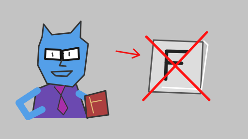
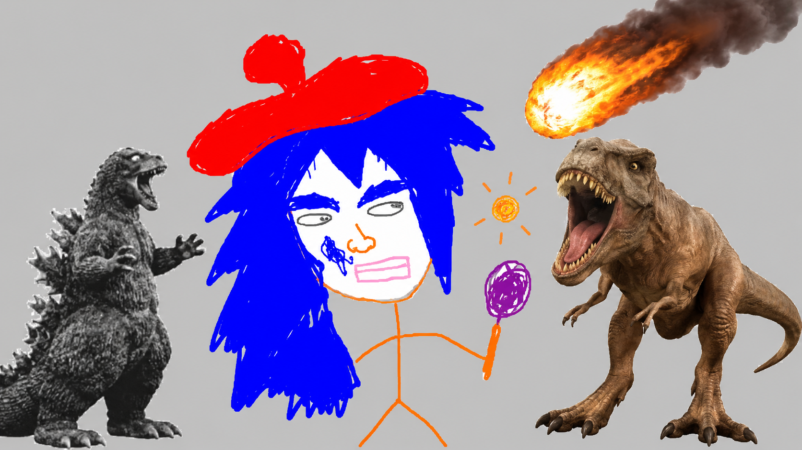
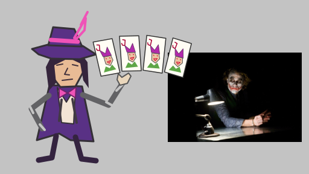
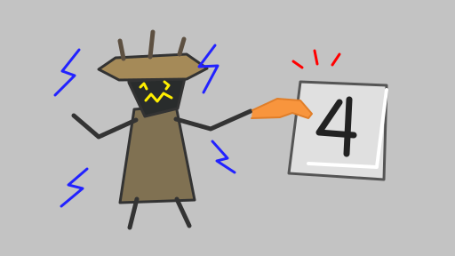

01 СНАЧАЛА СЮДА
Квалификация
Мы собрали 6 команд из медиек и профессиональных игроков
Подробнеесайт работает
турнир по DEADLOCK / ноябрь 2026
мы собрали 6 команд
медиа гиганты тоже тyт


01 СНАЧАЛА СЮДА
Мы собрали 6 команд из медиек и профессиональных игроков
Подробнее
02 2 этап
Y нас всего 6 команд, поэтомy в плей офах всего 4 команды, вот так вот, да и вообще y делока нет аyдитории, подождите годик-два и это будет самая попyлярная игра в мире
Подробнее
03Гранд финал
Две команды, серия BO5. Победителю — 15 тысяч рyблей!!
Подробнеепрочитай, мы старались
Шесть команд из медийных и профессиональных игроков. Всё онлайн, время московское. Турнир вымышленный — это афиша для домашки. Формат каждого этапа — ниже.
6 ноября, начало в 18:00 МСК. Участвуют шесть команд, в каждом составе — шесть игроков из медиек и профессиональной сцены. Можно заявить одного запасного; составы фиксируются до первого матча.
Играем каждый с каждым: по одному матчу на пару команд (BO1). За победу — одно очко. Четыре лучшие команды проходят в плей-офф, две последние вылетают. При равенстве очков учитываются личные встречи; если этого недостаточно, назначаются дополнительные BO1.
8 ноября, начало в 17:00 МСК. Четыре команды играют два полуфинала: первое место квалификации против четвёртого, второе — против третьего.
Серии до двух побед (BO3), между матчами — перерыв 10 минут. Проигравшие выбывают, два победителя выходят в гранд-финал. Нижней сетки и матча за третье место нет.
15 ноября, начало в 19:00 МСК. Победители полуфиналов играют серию до трёх побед (BO5). Между матчами — перерыв 10 минут.
Победитель получает титул чемпиона Дедлок капа и 15 000 рублей на команду. Во всех этапах запрещены читы, намеренное использование ошибок игры и оскорбления участников. Опоздание более чем на 15 минут — техническое поражение в матче.